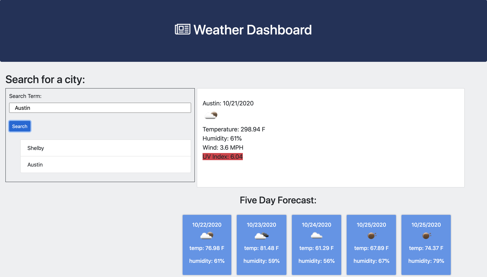

Projects

Weather Dashboard
In this project, I created a weather dashboard where the user needs only to enter their desired city and click "search", to return the weather forecast for that city. I was able to get the weather forecast for the current day and next five days by using the Open Weather Map API. I used mainly JQuery and CSS and HTML to produce this. It dynamically responds and works on desktop browsers, as well as phones or tablets.